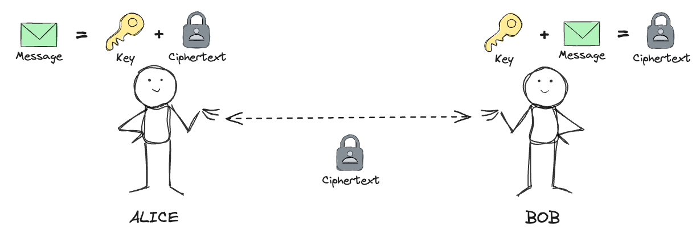
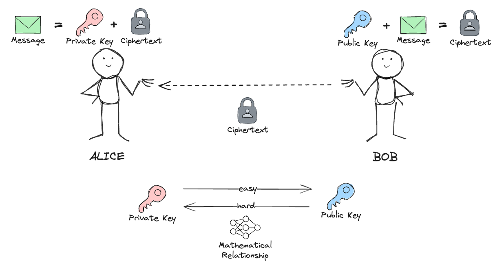

Symmetric encryption
The most popular symmetric algorithm is the Advanced Encryption Standard (AES)
AES with 256 bit key length is approved by NSA for top secret information.
Asymmetric encryption
- 🔒
Key exchange/establishment
→ establishing a secure communication channel
→ then hand over to symmetric encryption for efficiency

- ✍️
Digital signatures
→ create and verify signatures
→ serve as proof of digital content authenticity and integrity
Quantum threats
However, during computation can additionally be in a superposition state (a mix of both of them).
$\ket{\psi} = \alpha\ket{0} + \beta\ket{1} \rightarrow $ superposition

source: Stefano Markidis, KTH Royal Institute of Technology, https://arxiv.org/abs/2405.07222
...quantum parallelism allows quantum computers to evaluate a function $f(x)$ for many different values of x simultaneously.
One of most widely used public-private cryptosystems is RSA (Rivest–Shamir–Adleman)
Its security relies on the factoring problem of large prime numbers.
Example: factoring 15
- 1. Set $a = 13$
- 2. Find order $r = 4$
- 3. Calculate:
$p = gcd(170, 15) = 5$
$q = gcd(168, 15) = 3$

5 and 3 are factors of 15.
Shor's algorithm relies on inverse Quantum Fourier Transform used for function order finding. QFT is exponentially faster than any classical alternative.

source: Global Risk Institute, "2024 Quantum Threat Timeline Report"
Probability of finding a result in a 4-bit data set with executions of steps on a quantum computer.
Classically we need 8 steps, on quantum computer ~2.8 steps.
Post quantum cryptography?
In 2024 the first three PQC standards were formalized.
- 🔐
ML-KEM (Kyber)
→ Module-Lattice-Based Key-Encapsulation Mechanism Standard
→ FIPS-203 - ✍️
ML-DSA (Dilithium)
→ Module-Lattice-Based Digital Signature Standard
→ FIPS-204 - ✍️
SLH-DSA (SPHINCS+)
→ Stateless Hash-Based Digital Signature Standard
→ FIPS-205

Credit: N. Hanacek/NIST
Source: Cloudflare Radar, https://radar.cloudflare.com/adoption-and-usage#post-quantum-encryption-adoption

Source: Apple, https://security.apple.com/blog/imessage-pq3/
Demos